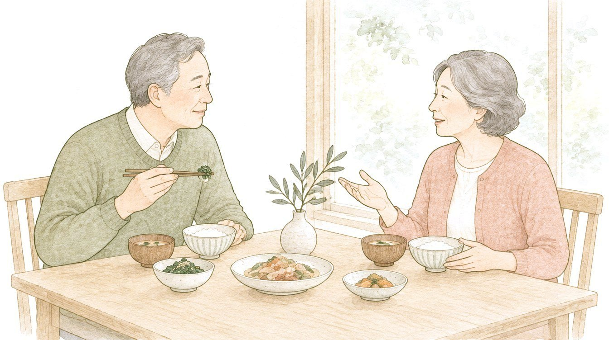
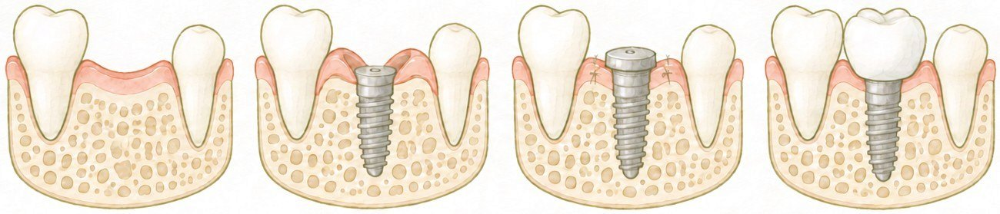
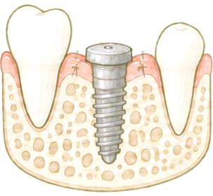
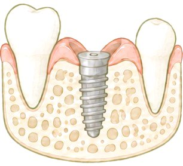
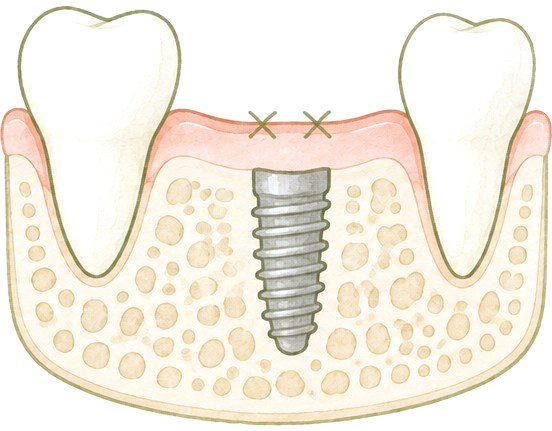
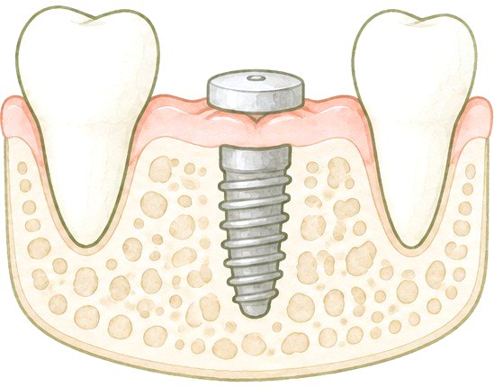

このページは、インプラントを考えはじめた方が、ご自分に合うかどうかを判断するための材料をまとめたものです。しくみ、ほかの方法との違い、治療の流れ、起こりうること、費用を、順に並べました。

歯を失った場所のあごの骨に、歯の根の代わりになるインプラント体（人工の歯の根）を入れます。インプラント体が骨とつくと、その上に被せ物や入れ歯をしっかり固定できる土台になります。この土台の上に歯を入れることで、かむ・話すといった、歯の働きの回復を目指します。
どこまで回復するかは、骨や歯ぐきの状態、かみ合わせ、上に入れる歯の種類、その後のお手入れによって変わります。結果をお約束するものではありません。
インプラントは、失った歯の根の代わりに、インプラント体をあごの骨に入れる方法です。骨とついたインプラント体を土台にして、その上に歯を入れます。となりの歯を削って支えにする必要はありません。

並び順に優劣はありません。向くものは、失った本数と場所、骨や全身の状態、ご希望によって変わります。
| 方法 | どんな方法か | よいところ | 起こりうること | 費用（税込） |
|---|---|---|---|---|
| インプラント | 骨にインプラント体を入れ、その上に被せ物や入れ歯を付ける | まわりの歯を削らない。自分の歯に近い感覚でかめる | 手術が必要。治療に数か月かかる。全身の状態によってはできない | 自費のみ 1本 480,000〜520,000円 |
| ブリッジ | 両隣の歯を削り、橋をかけるように被せ物をつなげる | 手術がいらない。治療期間が短い | 両隣の歯を削る。支える歯に負担がかかる | 保険／自費から選べる 自費は3本つなぐ形で390,000円〜 |
| 入れ歯 | 取り外しのできる装置で補う | 手術がいらない。歯を大きく削らない | かむ力が弱くなりやすい。違和感が出やすい。毎日の取り外しとお手入れが必要 | 保険／自費から選べる 自費の部分入れ歯は150,000円〜 |
| 何もしない | 歯のない状態のまま様子を見る | 費用がかからない | となりの歯が傾いたり、かみ合う歯が伸びてきたりして、かみ合わせが変わることがある | かからない |
期間は骨の状態と本数で変わり、数か月かかります。骨とつくのを待つ期間だけで、2か月〜6か月ほどかかります。
見た目やかみにくさが気になる場合は、数か月だけ使う仮の入れ歯などで対応できることがあります。方法と費用は、担当医にご相談ください。
骨の状態と、入れた直後のインプラント体の安定のぐあいを見て、担当医がいちばんよい進め方を選びます。

インプラント体の頭に付ける、小さなキャップのような部品です。歯ぐきから少し頭を出して、まわりの歯ぐきを、あとで入れる被せ物や入れ歯に合う形に整えます。
A1回の手術で進める

→インプラント体を入れたその日に、キャップまで付けて、まわりの歯ぐきを縫います。手術は1回です。
こんなときに：骨の量が足りていて、入れた直後からインプラント体がしっかり固定されているとき
B2回の手術で進める

→
インプラント体に小さなふた（カバースクリュー）をして、歯ぐきで覆って閉じます。骨と歯ぐきが治ったら、2回目の小さな手術で歯ぐきを開け、ふたをキャップに付け替えます。
こんなときに：骨を増やす処置（GBR）などを一緒に行ったとき／入れた直後の固定が弱めで、歯ぐきの中で守りながら待つほうがよいとき
費用は、どちらの進め方でも同じです。2回目の手術の費用はいただきません。骨を増やす処置などが加わる場合は、その費用がかかります。
時期の順に並べています。何がよくある経過で、何がご連絡いただくべきことかを知っておくと、安心して過ごせます。
次の病気やお薬がある方は、必ずお知らせください。手術のリスクや、骨とつくかどうかに影響します。必要に応じてかかりつけの先生に問い合わせ、担当医が判断します。
糖尿病／骨粗しょう症／貧血／高血圧／骨粗しょう症のお薬（ビスフォスフォネート系・デノスマブなど）／血をさらさらにするお薬／ステロイドのお薬／喫煙
タバコは、インプラント体が骨とつくことを妨げます。吸っている方は、手術の6週間前から手術のあと8週間は吸わないでいただきます。加熱式タバコも同じです。
歯周病がある場合は、先に歯周病の治療を行います。歯ぎしり・食いしばりがある場合は、マウスピースをおすすめすることがあります。
18件の研究をまとめた報告では、96.4%でした。途中で通院しなくなった方の分を、うまくいかなかったと仮定して計算し直すと、93.2%でした。これは「残っている」割合で、トラブルがないという意味ではありません。
研究をまとめた報告では、使っている方の18.5%、インプラント1本ごとに数えると12.8%でした。炎症の定義は研究ごとに少しずつ違うため、数字には幅があります。
インプラント1本の費用は、「インプラント体を入れ、キャップを付けるまで」と「上に入れる歯」の合計です。お支払いの順に並べました。
骨を増やす処置などが必要な場合は、その費用が加わります。治療の期間は数か月〜で、手術を伴います。起こりうることは4 起こりうることをご覧ください。
| お支払いの時期 | 内容 | 費用 |
|---|---|---|
| 検査のとき | インプラントの精密検査（CT・模型の分析など）6か月以内に治療を始めた場合は、手術の日のお支払いから差し引きます | 33,000円 |
| 検査のとき | 全体設計（お口全体の治療の計画と、ご説明）同上 | 16,000円 |
| ご予約を確定するとき | 手術準備金インプラント体の費用の一部としてお預かりし、全額を手術の日の費用に充てます | 70,000円 |
| 手術の日（一括） | インプラント体（手術・キャップまで）上の2つを差し引いた残り（221,000円）をお支払いいただきます | 340,000円 |
| 型取りの日／付ける日 | 上に入れる歯（被せ物・1本・土台と一体）半額ずつ。作り手による仕上がり（見た目・合い方）の違いで2種類あります | 140,000〜 180,000円 |
| 1本の総額（検査・設計・手術準備金は、上の340,000円の中に含まれます） | 480,000〜 520,000円 | |
歯科麻酔を専門とする先生が担当します。全身麻酔とは違い、ご自分で呼吸をしたまま行います。手術中のことを覚えていない方が多い方法です。受けられるかどうかは、全身の状態を確かめてから判断します。
インプラントは、「インプラント体」と「上に入れる歯」でできています。それぞれの性質に合わせて、保証を分けています。
保証の対象にならないのは、記録に残っている次の場合です：禁煙のご案内に従っていただけなかった／手術後の注意やお薬の飲み方など当院の指示に従っていただけなかった／事故や転倒など外からの強い力で壊れた／メインテナンスのご予約をご自身の判断で中断された。
インプラントが自分に合うかどうかは、お話だけでは決められません。骨の量と形は、外からは見えないためです。検査を受けると、ご自分の条件で判断できるようになります。
検査・設計から6か月以内にインプラントの治療を始めた場合は、この49,000円を手術の日のお支払いから差し引きます。6か月を過ぎると、お口の状態が変わるため、あらためて確かめます。
検査を受けても、インプラントに決める必要はありません。結果を見て、ほかの方法を選ぶ方もいらっしゃいます。
「インプラントの検査について聞きたい」とお伝えください。すぐに、すべてを決めていただく必要はありません。このページは、あとからでもゆっくりご覧いただけます。
044-740-0880